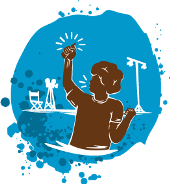

Kontax 2: The Big Win
Chapter 2

Sbu led Airtime, who was still bouncing with joy, out of the building
into a parking lot full of trailers and bakkies and pieces of furniture
from the set.
"What were you shouting like that for?" he said.
"You don't understand!" said Airtime. "I won!"
"It's just an internet quiz."
"Don't you get it? It's money! Real money! Look!"
Airtime handed Sbu the phone. Sbu scrolled down the message, reading it
carefully. Airtime leaned over his shoulder and bounced up and down in
excitement.
CONGRATULATIONS! You have won the Brain-e-telligent (TM) Online Quiz
"Big Win" Promotion first prize: Cash payout of…
"Fifty thousand rand?" said Sbu.
Airtime nodded, smiling.
Sbu whooped, just like Airtime had done.
"WHHHOOOOO!"
- - -
Three days later, Sbu and Airtime were in their friend Kate's brightly
coloured Hyundai. It had a pink city scene spray-painted on the sides,
and a graffiti tag that looked like a superhero emblem on the bonnet:
"K8".
K8 was her graffiti name, and it had been a long time since Airtime and
Sbu had called her anything else. She was the unofficial head of their
graffiti crew. She was also the only one of them who had a car.
They had been surprised to see she'd painted her car, because they knew
K8's parents were strict. But they had to admit that the artwork was
good. K8 had style.
"Today's going to be a good day!" sang Airtime. "Today's going to be a
good, good day!"
They were on their way to the Alto hotel in the city, where Airtime was
going to meet the quiz organisers and collect his prize money. He sat
in the front seat next to K8, and ran through all the things he was
planning to buy with the cash.
"Do you think I can afford a car?" he said. "I want that Camaro from
'Transformers'."
"You can't drive yet," said K8.
"Okay then, an X-Box. And a leather jacket. And a boat."
"Calm down!" K8 and Sbu said simultaneously. They looked at each other,
and grinned. Sbu rolled his eyes, and K8 laughed.
"You don't want to spend your money all at once," said Sbu.
"Spend it wisely. Make it last," said K8.
"Okay, okay," said Airtime. "I won't get a boat. How about a limo? Are
we there yet?"
They were driving down a long road lined with bars and hotels. Near the
end, K8 found an empty parking spot, and pulled in.
"Just over there," she said, pointing across the road to the hotel.
There were steps leading up to a black marble entrance with revolving
doors. A uniformed doorman stood outside.
Before the car's engine was off, Airtime was out the door and on the
pavement, rubbing his hands together in anticipation.
"Okay," he said. "It's time to be rich!"
< Previous chapter |
Contents
Main menu - All
Stories - Contact
- Terms of Use - Competition
Conditions
- Copyright & Credits (CC)